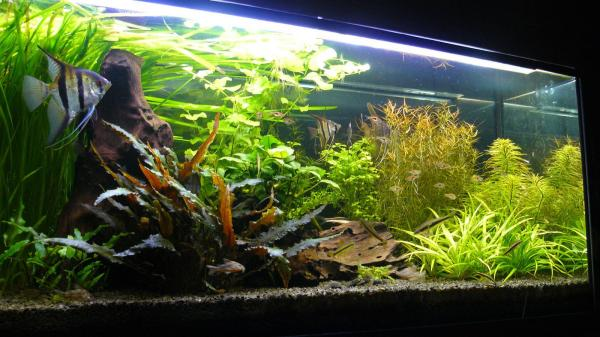
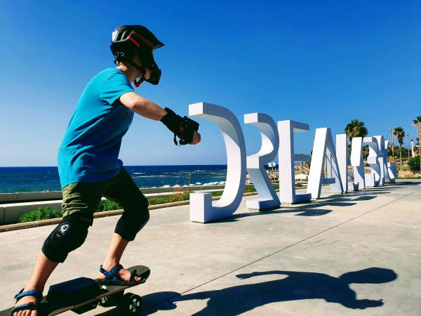
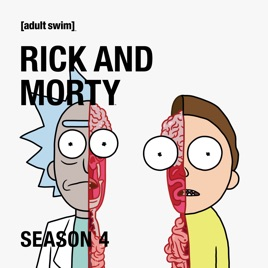
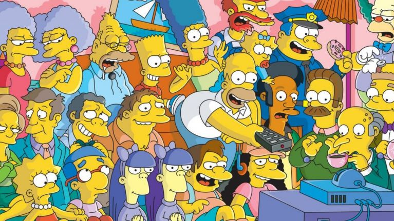
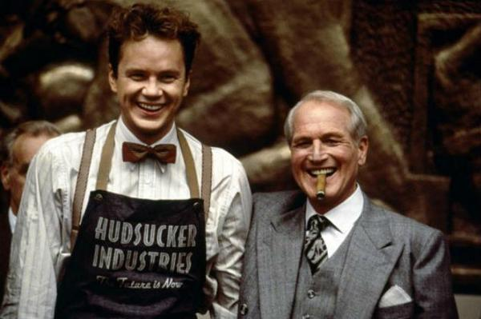
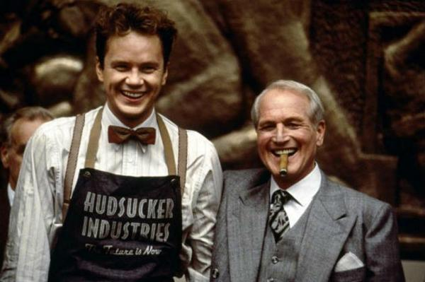

OrenGampel
OrenGampel
I'm a seasoned entrepreneur with 30 years of software development and management experience in tech-intensive companies.
I have two kids, and I'm living in Jaffa, a few steps from the beach.
You can find a bit more about me below.
Career
I'm a seasoned entrepreneur with 30 years of software development experience and over 20 years of experience in executive and operational management roles in highly technical software companies.
I serve as an Executive Vice President of Research and Development in Orbs ltd.
I founded PAKET, a truly decentralized parcel delivery solution based on cryptocurrency economy. You can learn more about it in this Forbes interview.
Earlier in my career, I managed Financial Algorithms (Final), a multi-billion Algo Trading Quant fund during it's most significant growth years, and several other technology-heavy organizations and teams.
I led one of the first successful implementations of Bitcoin based tokenization protocols (ColordCoins 2013), and many other technology-intensive products, in the cryptocurrency, FinTech, AdTech, and Enterprise software.
Co-founded two successful companies: MessageVine that merged with Onset in 2006, and Oblicore that was bought by CA (computer associate) in 2005. I also co authored an IBM Redbook about distributed computing, co written a patent, and wrote several other papers pseudonymously.
I also co-own a music production company that brings American Blues artists to perform in Israel, arranges music festivals, and involved in the local music scene.
Creating
I enjoy creating stuff.
Besides software, I build and maintain terrariums and aquariums of freshwater fish and plants. Recently, I've built a motorized skateboard with my son. I still can't ride it at its top speed. A few years ago, I built a house on a cliff right on the Pacific Ocean, on the west coast of Nicaragua. I'm also doing some light carpentry.
Curiosities
Apart from the above, I also enjoy:
- Books - mostly non-fiction, and usually when they are recorded and read to me over headphones
- TV - Everything between Colbert and Morty, Saul Goodman and Krusty
- Films -
 David Fincher, Coen bros.
David Fincher, Coen bros. - as well as Philosopy, Economy, Spirits (40% and higher), and Urban Legends
I used to practice Kendo and full contact martial arts. Now I'm mostly watching Mixed Martial Arts events.
Sports are important too. I'm trying not to do any.